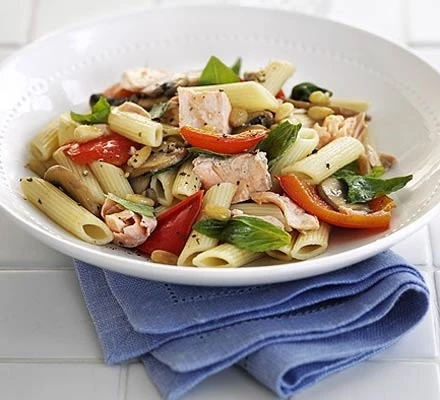

Salmon Pasta

A light pasta recipe made with salmon, penne, veg and basil - it's fresh, tasty and packed with goodness
Ingredients
- 350g penne
- 2 salmon steaks, about 175g each
- 1 tbsp olive oil
- 2 tbsp pine nut
- 1 red pepper, deseeded and chopped
- 300g mushroom, sliced
- handful basil leaves
Steps
- Cook the pasta following pack instructions and add the salmon to the water 6 mins before the end of the cooking time.
- Heat the oil in a pan, then cook the pine nuts until toasted. Add the pepper and fry until softened. Tip in the mushrooms and stir until they start to soften, then add a ladleful of the pasta water.
- Once pasta is cooked, remove the salmon to a plate, then drain the pasta. Fork the salmon into flakes and add the vegetables along with the pasta and the basil leaves. Season with pepper and lightly toss together before serving.